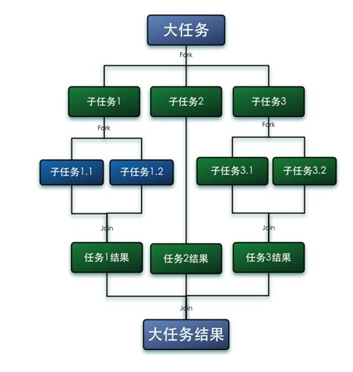

java多线程基础
Java多线程基础
并行基础概念
同步和异步
同步和异步通常是形容一次方法的调用，同步方法调用一旦开始，调用者必须等到方法调用返回后才能继续后续的行为；异步调用更像一个消息传递，一旦开始，方法调用就会立即放回，调用者可以继续后续的操作，而异步方法通常会在另外一个线程中“真实”的执行。
并发与并行
并发侧重于多个任务交替执行，并行是真实的同时执行，真实的并行只可能出现在多核CPU中
临界区
用来表示一种公共资源或者说是共享数据，可以被多个线程使用，但是一次只能有一个线程使用，一旦临界区资源被占用，其他线程想到使用这个资源必须等待
阻塞和非阻塞
当一个线程占用了临界区资源，其他所以需要这个资源的线程就必须在这个临界区中进行等待，等待会导致线程挂起，这种情况就是阻塞。
死锁、饥饿、活锁
死锁是指多个进程在运行过程中因争夺资源而造成的一种僵局，当进程处于这种僵持状态时，若无外力作用，它们都将无法再向前推进。
饥饿是某一个或者多个线程因为种种原因无法获得所需要的资源，导致一直无法执行。
活锁是两个线程主动将资源释放给对方用，那么就会出现资源不断在两个线程中跳动，而没有一个线程可以同时拿到所有资源而正常执行。
并发级别
可以分为阻塞、无饥饿、无障碍、无锁、无等待等
一个线程是阻塞的，那么在其他线程释放资源之前，当前线程无法继续执行。当使用synchronized关键字或者重入锁，得到的就是阻塞的线程
如果线程之间是有优先级的，那么线程调度的时候总会倾向于满足高优先级的线程，对于非公平锁来说，系统允许高优先级的线程插队。这样有可能导致低优先级线程产生饥饿。但如果锁是公平的，满足先来后到，那么饥饿就不会产生
无障碍是一种最弱的非阻塞调度。两个线程如果是无障碍的执行，那么他们不会因为临界区的问题导致一方挂起，对于无障碍线程，当检测到多个线程修改共享数据就会立即对自己所做的修改进行回滚，确保数据安全，如果没有数据竞争发生就可以顺利完成任务
无锁的并行都是无障碍的，在无锁的情况下，所有的线程都尝试对临界区进行访问，但不同的是无锁的并发保证必然有一个线程能够在有限步内完成操作离开临界区
无等待在无锁的基础上更进一步，要求所有的线程都必须在有限步内完成，一种典型的无等待结构就是RCU（Read-Copy-Update）基本思想是对数据的读可以不就控制，但在写数据的时候，先取得原始数据的副本，接着只修改副本数据，修改完成后，在合适的时机回写数据
原子性
是指一个操作是不可中断的，即使是多个线程一起执行的时候，一个操作一旦开始就不会被其他线程干扰
可见性
是指一个线程修改了某一个共享变量的值，其他线程是否能够立即知道这个修改
有序性
程序在执行时，可能会进行指令重排，重排后的指令与原指令的顺序未必一致
Java并行基础
进程与线程
进程是计算机中的程序关于某数据集合上的一次运行活动，是系统进行资源分配和调度的基本单位
线程是程序执行的最小单位，使用多线程而不是多进程进行并发程序设计是因为线程间的切换和调度的成本远小于进程
线程生命周期
New状态
当使用new创建一个Thread对象时候，此时并不处于执行状态
Runnable状态
调用start方法后，那么此时才是真正在JVM进程中创建了一个线程，该状态线程位于可运行线程池中，等待被线程调度选中，获取cpu的使用权
Running状态
可运行状态（Runnable）的线程获得CPU时间片，执行程序代码
Blocked状态
是指线程因为某种原因放弃了cpu的使用权，也即让出了cpu timeslice，暂时停止运行。直到线程进入可运行(runnable)状态，才有机会再次获得cpu timeslice 转到运行(running)状态。阻塞的情况分三种：
- 等待阻塞：运行(running)的线程执行o.wait()方法，JVM会把该线程放入等待队列(waitting queue)中。
- 同步阻塞：运行(running)的线程在获取对象的同步锁时，若该同步锁被别的线程占用，则JVM会把该线程放入锁池(lock pool)中。
- 其他阻塞：运行(running)的线程执行Thread.sleep(long ms)或运行在当前线程里的其它线程调用了join()方法，或者发出了I/O请求时，JVM会把该线程置为阻塞状态。当sleep()状态超时、join()等待线程终止或者超时、或者I/O处理完毕时，线程重新转入可运行(runnable)状态。
Dead状态
线程run(),main()方法执行结束，或者因为异常退出了run()方法，则该线程结束生命周期
线程基本操作
新建线程
只需要使用new关键字创建一个线程对象，并且将它start()起来即可
1 | Thread t1 = new Thread(); |
start()方法就会新建一个线程并让这个线程执行run()方法
如果直接调用run()方法不会新建一个线程，而是只会在当前线程中，串行执行run()中的代码
- 继承Thread创建线程
- 实现Runnanle接口创建线程
- 实现Callable接口通过FutureTask包装器来创建线程
- 使用ExecutorService、Callable、Future实现有返回结果的线程
终止线程
stop()方法，可以立即将线程终止，已被标记为废弃
强行把执行到一半的线程终止，可能会引起一些数据不一致问题
线程中断
线程中断不会使线程立即退出，而是给线程发送一个通知告知目标线程希望其退出，至于目标线程接到通知后如何处理则完全由线程自行决定
1 | public void Thread.interrupt() //中断线程 |
Thread.interrupt()是一个实例方法，它通知目标线程中断，也就是设置设置中断标志位。中断标志位表示当前线程已经被中断了。Thread.isInterrupted()方法也是实例方法，它判断当前线程是否被中断（通过检查中断标志位）。Thread.interrupted()是静态方法，也是判断中断状态，但同时会清除当前线程的中断标志位状态。
interrupted()作用于当前线程，interrupt()和isInterrupted()作用于调用此方法的实例所代表的线程
1 | public static void sleep(long millis) throws InterruptedException |
sleep()方法会让当前线程休眠若干时间，它会抛出一个InterruptedException中断异常。InterruptedException不是运行时异常，也就是程序必须捕获处理，当线程在sleep()休眠时，如果被中断，这个异常就会产生
wait和notify
这两个方法输出Object类，任何对象都可以调用
当在一个对象实例上调用了wait方法后，当前线程就会在这个对象上等待，比如一个线程调用了object.wait()，那么它就会进入这个object对象的等待队列。这个等待队列中可能有多个线程在等待，当object.notify()被调用的时候，就会从这个等待队列中随机选择一个线程唤醒，这个选择是不公平的，完全随机的
notifyAll()方法会唤醒在这个等待队列中所有的等待的线程
wait()和notify()方法必须包含哎对应的synchronzied语句中，都需要首先获得目标对象的一个监视器，
wait和sleep方法都可以让线程等待若干时间，wait方法会释放目标对象的锁，而sleep方法不会释放任何资源
挂起suspend和继续执行resume线程
不推荐使用，suspend方法在导致线程暂停的同时，并不会去释放任何锁资源，直到对应线程上进行了resume方法被挂起的线程才能继续，从而其他所有阻塞在相关锁上的线程也可以继续执行，但是如果resume操作意外的在suspend前执行会导致所占用的锁不会被释放。
等待线程结束join和谦让yield
当一个线程的输入可能非常依赖另外一个或者多个线程的输出时候。此时这个线程就需要等待依赖线程执行完毕才能继续执行
1 | public final void join() throws InterruptException |
第一个join方法表示无限等待，它会一直阻塞当前线程，直到目标线程执行完毕，第二个方法给出了一个最大等待时间，如果超过给定时间目标线程还在执行，当前线程也会因为等不及了而继续往下执行
join方法本质是让调用线程wait()在当前线程对象实例上，它让调用线程在当前对象上进行等待，当线程执行完成后，被等待的线程会在退出前调用notifyAll通知所有的等待线程继续执行 。因此不要在应用程序中，在Thread对象实例上使用类似wait或者notify等方法
yield方法是一个静态方法，会使当前线程让出CPU，但是让出后该线程还会进行CPU资源的争夺
volatile与Java内存模型（JMM）
在计算机中，所有的运算操作都是由CPU的寄存器完成，CPU指令的执行过程需要涉及数据的读取和写入操作，由于CPU的处理速度和内存的访问速度之间的差距越来越大，增加了缓存的设计
由于缓存的出现，极大地提高了CPU的吞吐模型，但是同时也引入了缓存不一致的问题，比如i++操作，在程序的运行过程中，首先需要将主内存中的数据复制一份存放到CPU Cache中，那么CPU寄存器在进行数值计算的时候就直接到Cache中读取和写入，当整个过程运算结束之后再将Cache中的数据刷新到主存当中，
i++在单线程中不会出现问题，但是在多线程中就会出现问题，为了解决缓存不一致的问题，通常主流解决办法有：通过总线加锁的方式，通过缓存一致性协议
在缓存一致性协议中最为出名的是Intel的MESI协议，MESI协议保证了每一个缓存中使用的共享变量副本都是一致的，它的大致思想是，当CPU在操作Cache数据的时，如果发现该变量是一个共享变量，也就是说在其他CPU Cache中也存在一个副本，那么：
- 读取操作，不做任何处理，只是将Cache中的数据读取到寄存器
- 写入操作，发出信号通知其他CPU将该变量的Cache line置为无效状态，其他CPU在进行该变量读取的时候不得不到主内存中再次获取
Java内存模型
Java内存模型决定了一个线程对共享变量的写入何时对其他线程可见，Java内存模型定义了线程和主内存之间的抽象关系，具体有：
- 共享内存存储在主内存之中，每个线程都可以访问
- 每个线程都有私有的工作内存或者称为本地内存
- 工作内存只存储该线程对共享变量的副本
- 线程不能直接操作主内存，只有先操作了工作内存之后才能写入主内存
- 工作内存和Java内存模型一样也是一个抽象的概念，它其实并不存在，它涵盖了缓存、寄存器、编译器优化以及硬件等
JMM与原子性
对基本数据类型的变量读取赋值操作是原子性，对引用类型的变量读取和赋值操作也是原子性的
x=10 原子性
y=x 非原子
y++ 非原子
z=z+1 非原子
JMM只保证了基本读取和赋值的原子性操作，如果想要使得某些代码片段具备原子性，需要使用关键字synchronized，或者JUC中的lock。如果想要使得int等类型自增操作具备原子性，可以使用JUC包下的原子封装类型java.util.concurrent.atomic.*
volatile关键字不具备原子性的语义
JMM与可见性
使用关键字volatile，当一个变量被volatile关键字修饰时，对于共享资源的读操作会直接在主内存中进行（当然也会缓存到工作内存中，当其他线程对该共享资源进行了修改，则会导致当前线程在工作内存中的共享资源失效，所以必须从主内存中再次获取），对于共享资源的写操作要先修改工作内存，但是修改结束后会立刻将其刷新到主内存中
同通过synchronized关键字，能够保证同一个时刻只有一个线程获得锁，然后执行同步方法，并且还会确保在锁释放之前，会将对变量的修改刷新到主内存中
通过JUC提供的显式锁Lock
JMM与有序性
在Java内存模型中，允许编译器和处理器对指令进行重排列，
- 使用volatile
- 使用synchronized
- 使用Lock
happens-before原则
- 程序次序规则：在一个线程内，代码按照编写时的次序执行，但是虚拟机还是可能会对程序代码的指令进行重排序，只要确保在一个线程内最终的结果和代码顺序执行的结果一致
- 锁定原则：一个unlock操作要先发生于对同一个锁的lock操作
- volatile变量规则：对一个变量的写操作要早与对这个变量之后的读操作
- 传递规则：如果A操作先于B，B先于C，则A肯定先于C
- 线程启动规则：Thread对象的start方法要先行发生于对该线程的任何动作
- 线程中断规则：对线程执行interrupt方法肯定要优先于捕获到中断信号
- 线程终结规则：线程中所有的操作都要先行发生于线程的终止检测
- 对象的终结规则：一个对象初始化的完成要先行发生在finalize()方法前
volatile
被volatile修饰的实例变量或者类变量具备如下两层语义：
- 保证了不同线程之间对共享变量操作的可见性
- 禁止对指令进行重排序操作
volatile原理
被volatile修饰的变量存在于一个“lock；”的前缀中，
“lock；”前缀实际上相当于一个内存屏障，该内存屏障会为指令的执行提供如下几个保证：
- 确保指令重排序时不会将后面的代码排到内存屏障之前
- 确保指令重排序时不会将前面的代码排到内存屏障后
- 确保在执行到内存屏障修饰的指令时在前面的代码全部执行完成
- 强制将线程工作内存中的值修改刷新到主内存
- 如果是写操作，则会导致其他线程工作内存总的缓存数据失效
volatile和synchronized
使用上的区别
- volatile关键字只能用于修饰实例变量或者类变量，不能用于修饰方法以及方法参数和局部变量、常量等
- synchronized关键字不能用于对变量的修饰，只能用于修饰方法或者语句块
- volatile修饰的变量可以为null，synchronized同步语句块的monitor对象不能为null
对原子性的保证
- volatile不能保证原子性
- synchronized可以保证代码的原子性
对可见性的保证
- 都可以保证共享资源在多线程的可见性
- synchronized借助JVM指令monitor enter和monitor exit对通过排他的方式使得同步代码串行化，在monitor exit时所有共享资源都将刷新到主内存
- volatile使用机器指令（偏硬件）“lock；”的方式迫使其他线程工作内存中的数据失效，不得不在主内存进行再次加载
对有序性保证
- volatile禁止JVM编译器以及处理器对其进行重排序，所以保证有序性
- synchronized所修饰的同步方法也可以保证顺序性，但是这种顺序性是以程序的串行化执行换来的，在synchronized关键字所修饰的代码块代码指令中也会发生指令重排序情况
其他
- volatile不会使线程陷入阻塞
- synchronized会使线程进入阻塞
线程组
在Thread的构造函数中，可以显示的指定线程的Group，也就是ThreadGroup，下面看init方法的中间部分:
1 | if (g == null) { |
如果在构造Thread的时候没有显示的指定一个ThreadGroup，那么子线程将会被加入父线程所在的线程组
守护线程
守护线程是在后台默默完成一些系统性的服务，比如垃圾回收线程、JIT线程；与之对应的是用户线程，用户线程是系统的工作线程，完成这个程序要完成的业务操作。当用户线程全部结束，只有守护线程时候，Java虚拟机自然退出
setDaemon 方法。isDaemon() 方法可以判断该线程是不是守护线程。
另外需要注意的就是，setDaemon() 方法只在线程启动之前才能生效，如果一个线程已经死亡，那么再设置 setDaemon() 则会抛出 IllegalThreadStateException 异常。
synchronized使用
指定加锁对象：对给定对象加锁，进入同步代码前要获得给定对象的锁
直接作用于实例方法：相当于对当前实例加锁，进入同步代码前要获得当前实例的锁
直接作用于静态方法：相当于对当前类加锁，进入同步代码前要获得当前类的锁
对象的同步Synchronized的底层是通过monitor来完成
每个对象有一个监视器锁（monitor）。当monitor被占用时就会处于锁定状态，线程执行monitorenter指令时尝试获取monitor的所有权，过程如下：
如果monitor的进入数为0，则该线程进入monitor，然后将进入数设置为1，该线程即为monitor的所有者。
如果线程已经占有该monitor，只是重新进入，则进入monitor的进入数加1.
如果其他线程已经占用了monitor，则该线程进入阻塞状态，直到monitor的进入数为0，再重新尝试获取monitor的所有权。
释放锁则是通过monitorexit指令，执行monitorexit的线程必须是objectref所对应的monitor的所有者，指令执行时，monitor的进入数减1，如果减1后进入数为0，那线程退出monitor，不再是这个monitor的所有者。其他被这个monitor阻塞的线程可以尝试去获取这个 monitor 的所有权。
方法的synchronized同步：相对于普通方法，其常量池中多了ACC_SYNCHRONIZED标示符。JVM就是根据该标示符来实现方法的同步的：当方法调用时，调用指令将会检查方法的 ACC_SYNCHRONIZED 访问标志是否被设置，如果设置了，执行线程将先获取monitor，获取成功之后才能执行方法体，方法执行完后再释放monitor。在方法执行期间，其他任何线程都无法再获得同一个monitor对象。
JDK并发包
ReentranLock
重要方法：
- lock():获得锁，如果锁已经被占用，则等待
- lockInterruptibly():获得锁，但是优先响应中断
- tryLock()：尝试获得锁，如果成功返回true，失败返回flae。该方法不等待，立即返回
- tryLock(long time , TimeUnit nuit)：在给定时间内尝试获得锁
- unlock()：释放锁
在重入锁实现中主要包含三个要素：
- 原子状态。原子状态使用CAS操作来存储当前锁的状态，判断锁是否已经被别的线程持有；以ReentrantLock为例，state初始化为0，表示未锁定状态。A线程lock()时，会调用tryAcquire()独占该锁并将state+1。此后，其他线程再tryAcquire()时就会失败，直到A线程unlock()到state=0（即释放锁）为止，其它线程才有机会获取该锁。当然，释放锁之前，A线程自己是可以重复获取此锁的（state会累加），这就是可重入的概念。但要注意，获取多少次就要释放多么次，这样才能保证state是能回到零态的。
- 等待队列。所有没有请求到锁的线程，会进入等待队列进行等待。待有线程释放锁后，系统就能从等待队列中唤醒一个线程，继续工作
- 阻塞原语park()和unpark(),用于挂起和恢复线程,没有得到锁的线程将会被挂起
Condition
通过Lock接口的Condition newCondition()方法可以生成一个与当前重入锁绑定的Condition实例。利用Condition对象，可以让线程在合适的时间等待，或者在某一个特定的时刻得到通知，继续执行
Condition接口方法有：
1 | void await() throws InterruptedException; |
信号量
信号量可以指定多个线程，同时访问某一个资源
1 | public Semaphore(int permits) { |
在构造信号量对象时，必须要指定信号量的准入数，当每个线程每次只申请一个许可时，就相当于指定了同时可以有多少个线程可以访问某个资源
1 | public void acquire() throws InterruptedException { |
简单实例如下
1 | public class SemapDemo implements Runnable { |
ReadWriteLock读写锁
1 | * <pre> {@code |
CountDownLatch
通常用来控制线程等待，
1 | * <pre> {@code |
CyclicBarrier
也可以实现线程间的计数等待，但是计数器可以循环使用
1 | * <pre> {@code |
LockSupport
可以在线程内任意位置让线程阻塞。和Thread。suspend相比，弥补了由于resume在前发生，导致线程无法继续执行的情况。和Object.wait相比，它不需要先获得某个对象的锁，也不会抛出InterruptedException异常
1 | * <pre> {@code |
线程池
为了避免系统频繁地创建和销毁线程，可以让创建的线程进行复用
Executor 框架是 Java 5 中引入的，其内部使用了线程池机制，它在 java.util.cocurrent 包下，通过该框架来控制线程的启动、执行和关闭，可以简化并发编程的操作。因此，在 Java 5之后，通过 Executor 来启动线程比使用 Thread 的 start 方法更好，除了更易管理，效率更好（用线程池实现，节约开销）外，还有关键的一点：有助于避免 this 逃逸问题——如果我们在构造器中启动一个线程，因为另一个任务可能会在构造器结束之前开始执行，此时可能会访问到初始化了一半的对象用 Executor 在构造器中。
Executor 框架包括：线程池，Executor，Executors，ExecutorService，CompletionService，Future，Callable 等
线程池类型
1 | public static ExecutorService newFixedThreadPool(int nThreads) { |
该方法返回一个固定线程数量的线程池，当有一个新任务提交的时候，线程池中若有空闲线程，则立即执行。若没有，则新的任务会被暂存在一个任务队列中，待有线程空闲时，便处理在任务队列中的任务
1 | public static ExecutorService newSingleThreadExecutor() { |
该方法返回一个只有一个线程的线程池，若多余一个任务被提交到该线程池，任务会被保存在一个任务队列中，待线程空闲，按先入先出的顺序执行队列中的任务
1 | public static ExecutorService newCachedThreadPool() { |
该方法返回一个可根据实际情况调整线程数量的线程池。当有线程来的时候且现在线程池的线程都在工作的时候，才创建新的线程，否则使用空闲的线程，默认情况下，如果某个线程空闲超过60秒就会自动结束
1 | public static ScheduledExecutorService newSingleThreadScheduledExecutor() { |
该方法返回一个ScheduledExecutorService对象，线程池的大小为1，扩展了在给定时间执行某任务的功能，如在某个固定的延时之后执行，或者周期性执行某个任务
1 | public static ScheduledExecutorService newScheduledThreadPool(int corePoolSize) { |
该方法返回一个ScheduledExecutorService对象，但该线程池可以指定线程数量
ForkJoinPoll
核心思想就是分治，Fork分解任务，Join收集数据

1 | public class CountTask extends RecursiveTask<Long> { |
ThreadPoolExecutor类
主要构造方法为
1 | /** |
参数workQueue指被提交但未执行的任务队列，是一个BlockingQueue接口的对象，仅用于存放Runnable对象。根据队列功能分类，可以使用的BlockingQueue有：
直接提交的队列：SynchronousQueue，是一个特殊的BlockingQueue。没有容量，每一个插入都要等待一个相应的删除操作，反之，每一个删除操作都要等待对应的插入操作。如果使用SynchronousQueue，提交的任务不会被真实的保存，而总是将新任务提交给线程执行，如果没有空闲的线程，则尝试创建新的线程，如果线程数量已经达到最大值则执行拒绝策略
有界的任务队列：ArrayBlockingQueue，当使用有界的任务队列时，若有新的任务需要执行，如何线程池的实际线程小于corePoolSize，则会优先创建新的线程，若大于corePoolSize，则会将新任务加入等待队列。若等待队列已满，无法加入，则在总线程数不大于maximumPoolSize的前提下，创建新的线程执行任务，若大于maximumPoolSize则执行拒绝策略
无界的任务队列：LinkedBlockingQueue，与有界队列相比，除非系统资源耗尽，否则无界的任务队列不存在任务入队失败的情况
优先任务队列：PriorityBlockingQueue， 可以根据任务自身的优先级顺序先后执行，在确保系统性能的同时，也能够很好的质量保证
拒绝策略
ThreadPoolExecutor的最后一个参数指定了拒绝策略，也就是当任务数量超过系统实际承载能力时，需要使用拒绝策略，JDK内置了四种拒绝策略
AbortPolicy策略：该策略会直接抛出异常，阻止系统正常工作
CallerRunsPolicy策略：只要线程池未关闭，该策略直接在调用者线程中,运行当前被丢弃的任务，
DiscardOledestPolicy策略：该策略将丢弃最老的一个请求，也就是即将被执行的一个任务，并尝试再次提交当前任务
DiscardPolicy策略：该策略默默地丢弃无法处理的任务，不予任何处理。
锁优化
减少锁持有时间，只在必要时进行同步，这样就能明显减少线程持有锁的时间，提高系统的吞吐量
减少锁粒度，就是缩小锁定对象的范围，从而减少锁冲突的可能性，进而提高系统的并发能力
读写分离锁来代替独占锁
锁分离，例如在LinkedBlockingQueue实现中，take和put函数分别实现了从队列中取得数据和往队列中增加数据功能，分别作用于队列的前端和尾端，所以可以通过takeLock和putLock两把锁
锁粗化，虚拟机在遇到一连串连续地对同一锁进行请求和释放的操作时，便会把所有的锁操作整合成对锁的一次请求，从而减少对锁的请求同步次数，这个操作叫做锁粗化
JDK内部”锁“优化策略
锁偏向:如果一个线程获得了锁，那么锁就进入偏向模式，当这个线程再次请求锁时，无须再做任何同步操作
轻量级锁：只是简单地将对象头部作为指针，指向持有锁的线程堆栈的内部，来判断一个线程是否持有对象锁。如果线程获得轻量级锁成功，则可以顺利进入临界区。如果轻量级锁加锁失败，则表示其他线程抢先争夺到了锁，那么当前线程的锁请求就会膨胀为重量级锁
自旋锁：锁的等待者会原地忙等，不停的询问，直到获得锁。采用让当前线程不停地的在循环体内执行实现，当循环的条件被其他线程改变时才能进入临界区。
锁消除：Java虚拟机在JIT编译时，通过对运行上下文的扫描，去除不可能存在共享资源竞争的锁
ThreadLocal
1 | /** |
1 | /** |
1 | /** |
AQS（AbstractQueuedSynchronizer）
AQS（AbstractQueuedSynchronizer），抽象的队列式的同步器，AQS定义了一套多线程访问共享资源的同步器框架，许多同步类实现都依赖于它，如常用的ReentrantLock/Semaphore/CountDownLatch…。
AQS有以下几种方法：
- isHeldExclusively()：该线程是否正在独占资源。只有用到condition才需要去实现它。
- tryAcquire(int)：独占方式。尝试获取资源，成功则返回true，失败则返回false。
- tryRelease(int)：独占方式。尝试释放资源，成功则返回true，失败则返回false。
以ReentrantLock为例，state初始化为0，表示未锁定状态。A线程lock()时，会调用tryAcquire()独占该锁并将state+1。此后，其他线程再tryAcquire()时就会失败，直到A线程unlock()到state=0（即释放锁）为止，其它线程才有机会获取该锁。当然，释放锁之前，A线程自己是可以重复获取此锁的（state会累加），这就是可重入的概念。但要注意，获取多少次就要释放多么次，这样才能保证state是能回到零态的。
上面是AQS定义的资源独占方式，其实还有资源共享方式，采用以下两种方法：
- tryAcquireShared(int)：共享方式。尝试获取资源。负数表示失败；0表示成功，但没有剩余可用资源；正数表示成功，且有剩余资源。
- tryReleaseShared(int)：共享方式。尝试释放资源，如果释放后允许唤醒后续等待结点返回true，否则返回false。
CAS（Compare and swap）
CAS（Compare and swap）比较和替换是设计并发算法时用到的一种技术。简单来说，比较和替换是使用一个期望值和一个变量的当前值进行比较，如果当前变量的值与我们期望的值相等，就使用一个新值替换当前变量的值。
现在CPU内部已经执行原子的CAS操作，Java5+中内置的CAS特性可以让你利用底层的你的程序所运行机器的CPU的CAS特性，这会使代码运行更快。
Java5以来，你可以使用java.util.concurrent.atomic包中的一些原子类来使用CPU中的这些功能
上面是一个使用AtomicBoolean类实现lock()方法的例子。
locked变量不再是boolean类型而是AtomicBoolean。这个类中有一个compareAndSet()方法，它使用一个期望值和AtomicBoolean实例的值比较，若两者相等，则使用一个新值替换原来的值。在这个例子中，它比较locked的值和false，如果locked的值为false，则把修改为true。
即compareAndSet()返回true，如果值被替换了，返回false。
CAS用于同步（乐观锁的机制就是CAS）
- 通常将 CAS 用于同步的方式是从地址 V 读取值 A，执行多步计算来获得新 值 B，然后使用 CAS 将 V 的值从 A 改为 B。如果 V 处的值尚未同时更改，则 CAS 操作成功。
- 类似于 CAS 的指令允许算法执行读-修改-写操作，而无需害怕其他线程同时 修改变量，因为如果其他线程修改变量，那么 CAS 会检测它（并失败），算法 可以对该操作重新计算
CAS存在的问题：有三个，ABA问题，循环时间长开销大和只能保证一个共享变量的原子操作。
ABA问题：
- 因为CAS需要在操作值的时候检查下值有没有发生变化，如果没有发生变化则更新，但是如果一个值原来是A，变成了B，又变成了A，那么使用CAS进行检查时会发现它的值没有发生变化，但是实际上却变化了。ABA问题的解决思路就是使用版本号。在变量前面追加上版本号，每次变量更新的时候把版本号加一，那么A－B－A 就会变成1A-2B－3A。
- 从Java1.5开始JDK的atomic包里提供了一个类AtomicStampedReference来解决ABA问题。这个类的compareAndSet方法作用是首先检查当前引用是否等于预期引用，并且当前标志是否等于预期标志，如果全部相等，则以原子方式将该引用和该标志的值设置为给定的更新值。
循环时间长开销大：
- 自旋CAS如果长时间不成功，会给CPU带来非常大的执行开销。
- 如果JVM能支持处理器提供的pause指令那么效率会有一定的提升，pause指令有两个作用，第一它可以延迟流水线执行指令（de-pipeline）,使CPU不会消耗过多的执行资源，延迟的时间取决于具体实现的版本，在一些处理器上延迟时间是零。第二它可以避免在退出循环的时候因内存顺序冲突（memory order violation）而引起CPU流水线被清空（CPU pipeline flush），从而提高CPU的执行效率。
只能保证一个共享变量的原子操作：
- 当对一个共享变量执行操作时，我们可以使用循环CAS的方式来保证原子操作，但是对多个共享变量操作时，循环CAS就无法保证操作的原子性。
- 这个时候就可以用锁，或者有一个取巧的办法，就是把多个共享变量合并成一个共享变量来操作。比如有两个共享变量i＝2,j=a，合并一下ij=2a，然后用CAS来操作ij。从Java1.5开始JDK提供了AtomicReference类来保证引用对象之间的原子性，你可以把多个变量放在一个对象里来进行CAS操作
死锁分析
死锁就是两个或者多个线程，相互占用对方需要的资源，而都不进行释放，导致彼此之间相互等待对方释放资源，产生了无限制的等待现象
1 | public class DeadLockDemo extends Thread { |
产生死锁的四个必要条件：
互斥条件：一个资源每次只能被一个进程使用。
请求与保持条件：一个进程因请求资源而阻塞时，对已获得的资源保持不放。
不剥夺条件:进程已获得的资源，在末使用完之前，不能强行剥夺。
循环等待条件:若干进程之间形成一种头尾相接的循环等待资源关系
如何避免死锁？
从死锁的四个必要条件来看，破坏其中的任意一个条件就可以避免死锁。但互斥条件是由资源本身决定的，不剥夺条件一般无法破坏，要实现的话得自己写更多的逻辑。
避免无限期的等待：用Lock.tryLock(),wait/notify等方法写出请求一定时间后，放弃已经拥有的锁的程序。
注意锁的顺序：以固定的顺序获取锁，可以避免死锁。
开放调用：即只对有请求的进行封锁。你应当只想你要运行的资源获取封锁，比如在上述程序中我在封锁的完全的对象资源。但是如果我们只对它所属领域中的一个感兴趣，那我们应当封锁住那个特殊的领域而并非完全的对象。
最后，如果能避免使用多个锁，甚至写出无锁的线程安全程序是再好不过了
BlockingQueue解决生产者消费者问题
1 | public class ProduceAndConsumerDemo { |
使用wait和notify实现生产者和消费者
1 | public class ProduceAndConsumerDemo2 { |
参考资料
《Java高并发编程详解》
《实战Java高并发程序设计》
《Java多线程编程核心技术》
https://github.com/ZXZxin/ZXBlog/tree/master/%E5%B9%B6%E5%8F%91/%E5%A4%9A%E7%BA%BF%E7%A8%8B
https://blog.csdn.net/ll666634/article/details/78615505
https://blog.csdn.net/cmyperson/article/details/79610870


原文作者: Yang Peng
原文链接: http://ylovex.cn/2019/07/16/java多线程基础/
版权声明: 转载请注明出处(必须保留作者署名及链接)